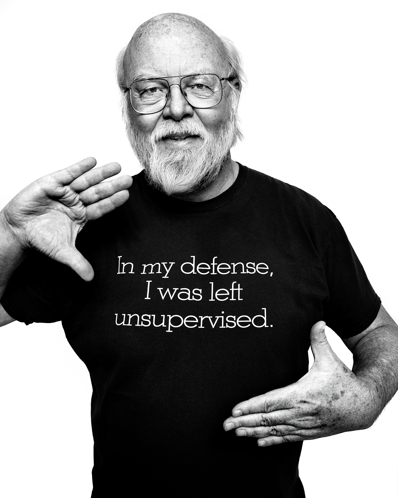

James Gosling (Calgary, 19 de maio de 1956) é um programador canadense, mais conhecido como o pai da linguagem de programação Java. Em 1977, James Gosling se formou bacharel em ciência da computação pela Universidade de Calgary, e em 1983 obteve um PhD em ciência da computação pela Universidade Carnegie Mellon. Enquanto preparava seu doutorado, Gosling programou a versão original do editor de texto emacs para UNIX, e antes de se juntar a Sun Microsystems construiu uma versão de UNIX para máquinas multiprocessadas, assim como diversos compiladores e sistemas de mensagens eletrônicas.
Gosling trabalhou desde 1984 na Sun Microsystems até abril de 2010, quando se demitiu. Em março de 2011 anunciou em seu blog que havia sido contratado pela Google.[3] Cinco meses depois, anunciou sua saída da Google, e contratação pela startup Liquid Robotics.[2]
Ele é consultor da empresa Scala Lightbend, diretor independente da Jelastic, e consultor estratégico para o eucalipto e é membro do conselho da DIRTT Environmental Solutions. Ele é conhecido por seu amor por provar "o desconhecido" e observou que seu número irracional favorito é √2. Ele tem uma imagem emoldurada dos primeiros 1.000 dígitos de √2 em seu escritório.
Contribuições
Inicialmente, Gosling ficou conhecido como autor de Gosling Emacs e também inventou o sistema de janelas NeWs, que perdeu para o X Window porque a Sun não concedeu uma licença de código aberto.
É geralmente apontado como sendo o inventor da linguagem de programação Java (lançada em Maio de 1995). Fez o projeto original do Java e implementou o seu primeiro compilador e sua máquina virtual.
Gosling traça as origens da abordagem em seus primeiros dias de estudante de graduação, quando criou uma máquina virtual com código p para o computador DEC VAX do laboratório, para que seu professor pudesse executar programas escritos em UCSD Pascal. No trabalho que levou ao Java na Sun, ele viu que a execução neutra em arquitetura para programas amplamente distribuídos poderia ser alcançada implementando uma filosofia semelhante: sempre programe para a mesma máquina virtual.
Por este feito foi eleito para a Academia Nacional de Engenharia dos Estados Unidos. Também fez grandes contribuições para outros softwares tais como o en:NeWS e o en:Gosling Emacs. Outra contribuição de Gosling foi co-escrita do programa "bundle", um utilitário detalhado em detalhes no livro de Brian Kernighan e Rob Pike, The Unix Programming Environment.
Java
Em junho de 1991, Gosling, Mike Sheridan, Patrick Naughton e Ed Frank iniciaram o projeto de linguagem Java (chamado "The Green Project" na época). Essa foi uma consequência mais formal de um projeto anterior liderado por Sheridan para criar uma nova linguagem de programação e ambiente para a Sun além da linguagem C++, em uso amplo
O novo idioma seria projetado para rodar em uma variedade de plataformas - não apenas computadores, mas o espectro emergente de dispositivos "inteligentes", como televisões, eletrodomésticos, telefones, decodificadores e outros sistemas embarcados.
A versão inicial, chamada "Oak", foi demonstrada pela primeira vez em 2 de setembro de 1992, na forma de um sofisticado controlador de mídia portátil, chamado *7 (Star-7), que usava uma interface gráfica com o usuário e era fácil de seguir "Home" como metáfora.

Honras
• 2002: ele foi premiado com o The Economist Innovation Award.
• 2002: ele foi premiado com o The Flame Award pela USENIX Lifetime Achievement Award.
• 2007: ele foi nomeado oficial da Order of Canada. A Ordem é a segunda maior honra civil do Canadá. Os oficiais são o segundo grau mais alto da Ordem.
• 2013: tornou-se membro da Association for Computing Machinery.
• 2015: Medal IEEE John von Neumann concedida.
• 2019: nomeado bolsista do Computer History Museum Fellow pela concepção, design e implementação da linguagem de programação Java.